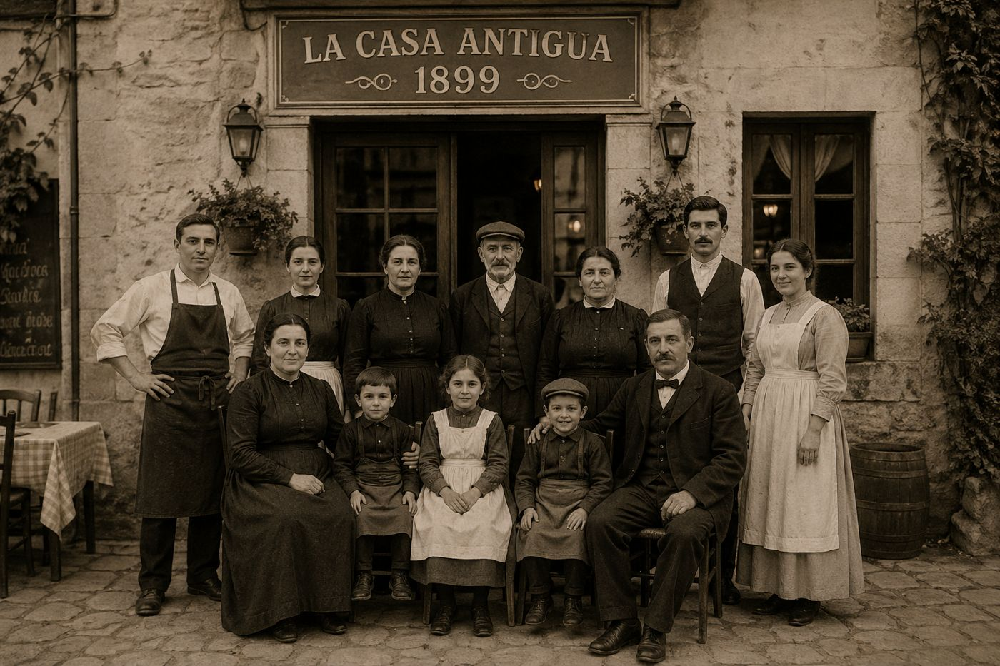
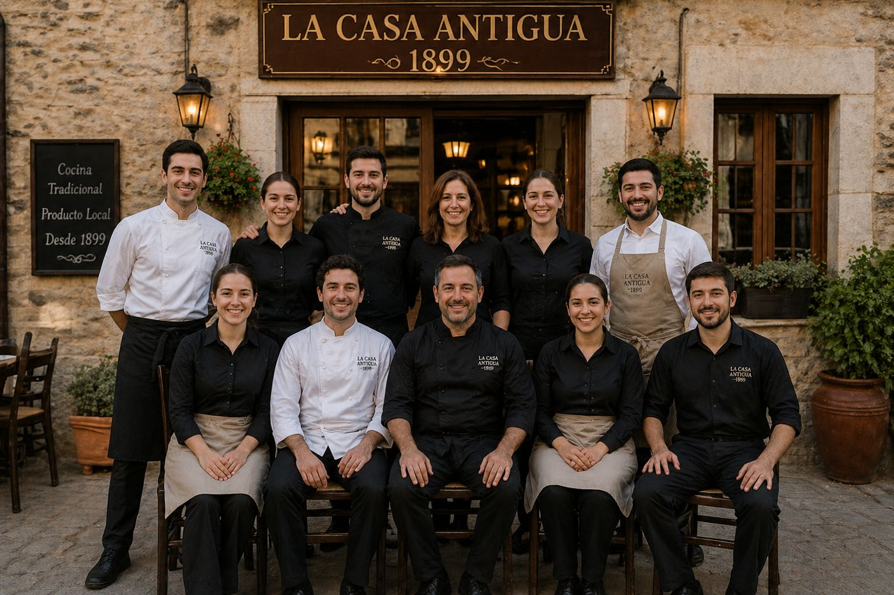

Fundado en 1899, La Casa Antigua 1899 nació como una pequeña casa de comidas familiar en el corazón del pueblo, en un edificio de piedra que todavía conserva la esencia y el encanto de otra época.
Lo que comenzó como un humilde rincón donde viajeros y vecinos se reunían alrededor de una mesa, pronto se convirtió en un lugar de referencia por su cocina casera, su ambiente acogedor y el trato cercano de sus anfitriones.
A lo largo de generaciones, La Casa Antigua 1899 ha sabido mantener viva su esencia: recetas tradicionales, ingredientes de calidad y el sabor auténtico de la cocina de siempre.
Cada plato cuenta una historia heredada, elaborada con dedicación y respeto por la tradición, combinando el legado de nuestros antepasados con un toque actual.
Hoy, más de un siglo después, seguimos abriendo nuestras puertas con la misma pasión con la que empezó todo: ofrecer un lugar donde compartir, disfrutar y saborear la auténtica gastronomía en un entorno lleno de historia, calidez y tradición.
Porque en La Casa Antigua 1899, cada comida es también una forma de volver al origen.
1899

2026
